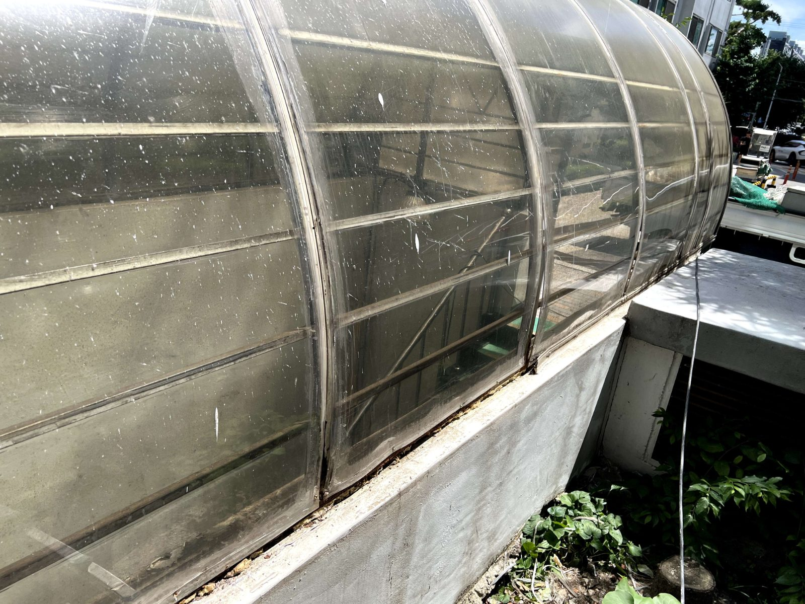

대전 태산그린아파트 렉산 고정대 교체 — 판보다 먼저 삭는 것이 고정대입니다

렉산(폴리카보네이트) 판을 잡아주는 노후 고정대를 제거하고 새로 설치한 뒤 페인트로 마감한 현장입니다.
어떤 공사였나요
렉산(폴리카보네이트 판)을 잡아주는 고정대를 교체한 현장입니다. 렉산 자체보다 고정대가 먼저 삭는 경우가 많습니다. 고정대가 노후되면 바람에 판이 덜컹거리고, 심하면 판이 이탈합니다.
제거와 신규 설치
기존 고정대를 제거하고 새 고정대를 설치했습니다. 철거 때 기존 타공 자리를 확인해서, 새 고정 위치가 헐거워진 구멍에 다시 물리지 않도록 잡는 것이 중요합니다.

페인트는 녹 방지입니다
고정 작업 후 철부에 페인트를 칠해 마감했습니다. 미관도 있지만 주 목적은 녹 방지입니다. 도장까지 해두면 고정대 수명이 확실히 달라집니다.
견적 확인 포인트
렉산 공사 견적을 받으실 때 고정대를 재사용하는지 교체하는지 확인해 보시길 권합니다. 판만 갈고 삭은 고정대를 재사용하면 몇 년 안 가 같은 문제가 생깁니다. 관리사무소 단위의 공용부 공사도 견적을 드립니다.